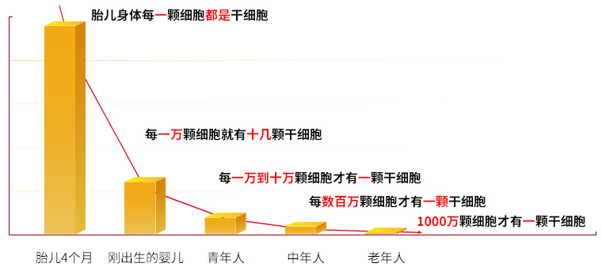
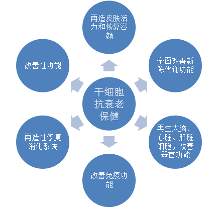
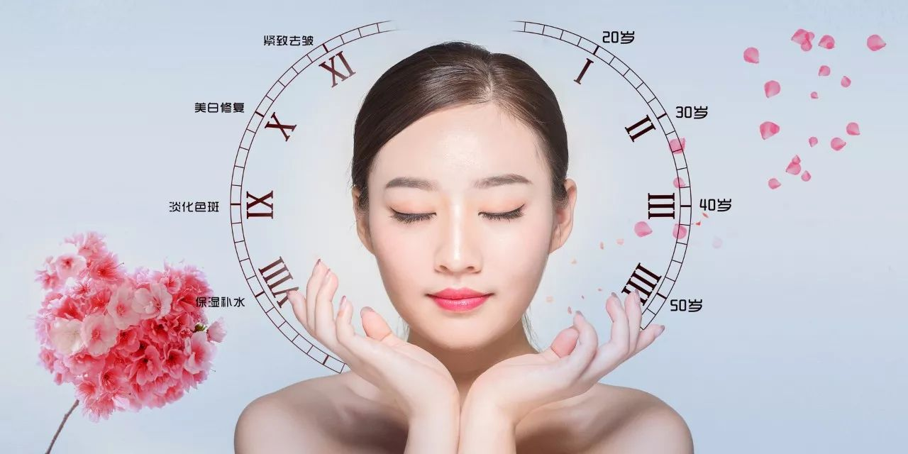

年后肝"负重"？百年春护肝美颜能量抗衰老针——给肝"松绑"，让脸发光！
2026-03-01

About Us
关于百年春
人衰老的本质—自体干细胞的衰老
2007年，英国科学家Anastasia 在Nature杂志上撰文指出：成体自体干细胞对人体自我修复和组织再生至关重要，成体自体干细胞的减少是人体衰老的主要原因。
人体是由大约1800万个不同生理特性的细胞组成的“细胞社会”。每天都有1%~2%的细胞死亡，同时每天也有1%~2%的细胞新生。而自体干细胞就是这个“细胞社会”的母亲。随着个体生命的生长、成熟，体内各种成体干细胞逐步减少，甚至在某些组织、器官中完全消失。体内的自体干细胞干瘪后，它就不能再制造新细胞，细胞的新陈代谢机能也就减弱，衰老细胞越来越多，机体就变老了，直至死亡。所以，各种成体自体干细胞是维持机体器官生长和新陈代谢的动力，同时也是机体修复衰老退行性变的最重要、最基本的生物单位，是决定生命衰老的关键因素。
一般说来，人在少年和青年时期，体内干细胞（自体干细胞）数量丰富，状态年轻，组织器官和机体的生长能力旺盛，再生和修复能力强盛；中老年时期，干细胞数量减少并逐步衰竭，与其它细胞的比例降低至十万分之一到百万分之一左右，再生和修复能力进行性减弱，机体衰老，疾病多发及死亡。所以，人的生长发育、再生修复、衰老发展、疾病和死亡都与干细胞有着直接的关系，干细胞贯穿生命的全过程。

自体干细胞数量随年龄的增长而减少
人能一直年轻下去吗？
现代研究认为人类的正常寿命应该可以达到120-175岁，自体干细胞抗衰老在细胞抗衰老领域里取得了巨大的突破，也许不能让你活到175岁，却会使我们和这个目标之间的距离拉近，并且大大提高有效生命力的生活质量。
自体干细胞抗衰，如何解决根本问题？
面对细胞的新老更替出现问题的，追本溯源发现，机体内能够起到更新作用的细胞就是干细胞，也就是说衰老的源头是自体干细胞不足。
自体干细胞移植，就是为机体补充缺乏的干细胞，帮助机体快速地更新替换衰老的细胞，从而使机体年轻充满活力。自体干细胞移植，可以在机体内不断更新和替换衰老的细胞，亦可通过细胞分裂不断繁殖，让身体从内到外都散发青春的光彩，并且自体干细胞在体内存活表现为长期有效。

什么人需要自体干细胞移植？
经过多年的临床试验应用证明，人类进入25岁以后，人体开始进入衰退期。对有以下状况的人，建议做自体干细胞移植，即无精打采、有气无力、精疲力竭、身心俱疲，对于什么事没有兴趣，未老先衰的，而且众多器官功能不畅，如：心脏、肺、肝、肾、消化系统、关节炎、内分泌系统功能不畅，因紧张焦虑而导致的植物神经系统慢性疾病，周期性头痛，如：偏头痛、头痛、神经痛、背痛、坐骨神经痛、心血管系统动脉硬化、疾病和手术后遗症。
自体干细胞移植是延缓衰老提高生命品质的医学突破
针对很多女性在30—40岁便快速衰老的问题，经研究发现，女性在这段时间表现的衰老现象，并不是真正的衰老，而是一种假性衰老，道理就像假性近视眼一样。
30—40岁的女性由于生儿育女家庭和工作等负担导致身体超限损耗，使肾脏、卵巢功能和雌激素的平衡发生了变化，所以很多人出现衰老症状。这是因为这些导致了人体一些器官细胞的过度疲劳，但这并不是器官真正的衰老，所表现的衰老现象其实是一种假性衰老，这段时间一般为五年左右。

临床研究表明，女性这个时期的衰老是可以逆转的，如果能适量补充提高肾脏、卵巢功能及调节雌激素平衡的物质，就会使体内疲劳的器官细胞恢复活力，女人也就会变得年轻了。
如果错过这个时机，身体内长期疲劳的器官就会失去逆转性，导致器官功能退化，由假性衰老发展到真正的衰老，女性在这种情况下，单纯注重面部皮肤的美容是不行的，应该从内部根本解决。
自体干细胞移植无疑给正处在这个年龄段的女性带来延缓衰老，保持青春的希望。
同样的疗效也作用在男性的身上，许多事业心强的男性由于日常应酬多，工作生活压力过大，城市生活节奏快而缺乏锻炼时间，忙于进取而往往忽略了健康投资，均出现程度不一的亚健康状况，严重的导致身体机能下降，出现未老先衰症状，自体干细胞抗衰老保健项目更是这些男性重获旺盛精力的希望。
自体干细胞移植可改善身体机能，提高免疫力，男性功能增强，恢复充沛精力，拥有一份健康将是一切事业的成功之本。
自体干细胞抗衰老技术最显著的特点就是：能再造一种全新的、正常的，更加年轻的细胞、组织或器官，所以会产生返老还童的效果。遇见十年前的自己不只是梦想，娱乐明星、达官显贵，纷纷采用干细胞抗衰老，保持青春年华，旺盛精力，而且生命会得到延长。